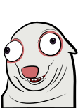

Justiça Eleitoral
Urna eletrônica
Terminal 01
Candidato
Vote para prefeito
Digite o número do candidato no teclado ao lado.
4
0
8
Barto
Barto e Cachorro Boboca · Chapa 408

Teclado
●
Seu voto é secreto e armazenado somente neste terminal.